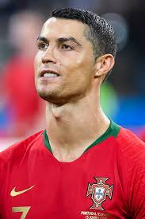

Cristiano Ronaldo dos Aveiro (born 5 February 1985 in Funchal, Madeira), better known as Cristiano Ronaldo, is a Portuguese footballer. He plays for the Italian club Juventus and the Portuguese national team. He is widely considered to be one of the greatest footballers of all time, and, by some, as the greatest ever.
Ronaldo was once, the most expensive professional football player of all time, after moving from Manchester United to Real Madrid for approximately £80m. At his presentation as a Real Madrid player, 80,000 people greeted him at the Santiago Bernabéu Stadium. This is the world record, passing the 25-year record of 75,000 people at Diego Maradona's presentation for Napoli.
He is the first player to win the rebranded UEFA Champions League five times.[17] He also holds the record for the most number of goals scored in Real Madrid's history. Until this day, he remains the only player in the history of La Liga to score 30 or more goals in six consecutive seasons. He is Portugal's top appearance maker as well as top goalscorer of all time.

Ronaldo with portugal at
the 2018 fifa world cup
Personal Information
Full name : Cristiano Ronaldo dos Santos Aveiro
Date of birth: 5 February 1985 (age35)
Place of Birth: Funchal,Maderia,Protugal
Height: 1.87m(6 ft 2in)
Playing position: Forwad
Club Information:
Current team : Juventus
Number: 7
Youth Career
1992-1995: Andorinha
1995-1997: Nacional
1997-2002: Sporting CP
Senior Career*
Years Team Apps Goals
2002-2003 Sportin CP 25 (3)
2003-2009 ManU 196 (84)
2009-2018 Real Madrid 292 (311)
2018- Juventus 53 42
National Team
2001 Portugal U15 9 (7)
2001-2002 Portugal U17 7 (5)
2003 Portugal U20 5 (1)
2004 Poutugal U23 3 (2)
2003- Portugal 164 (99)
Honours
UEFA European Championship
Winner 2016 France
Runner-up 2004 Portugal
UEFA National League
Winner 2019 Portugal